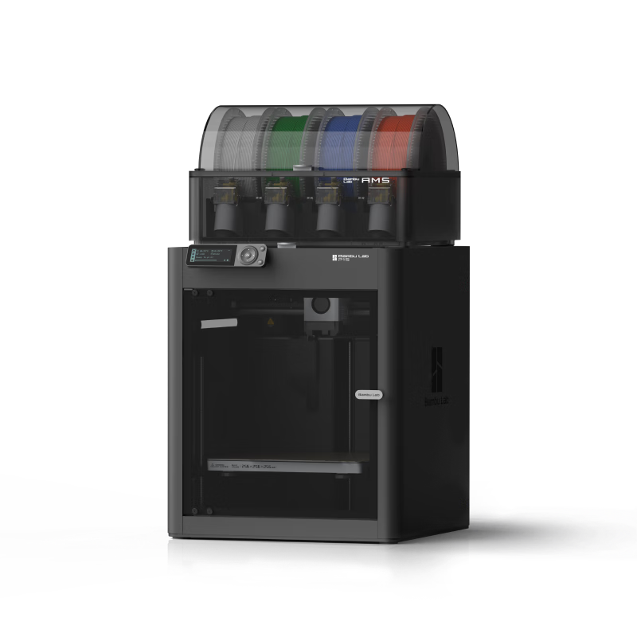

第 13 页 · 落地
≈ 30 min
前置：12 工程实现
3D 打印实操 FDM Printing · Bambu Lab P1S
这门课的零件一大半出自这台机器。上一页讲"怎么设计得能打"，这一页让零基础的你 第一次打印就成功：认识机器、走完第一次打印、学会调参数、会诊断坏首层。
13.1
认识机器：P1S 解剖图
点击图中的数字热点（8 个），下方面板显示该部件的"是什么 / 规格 / 它决定什么 / 新手误区"。
拓竹 Bambu Lab P1S · 正视 + 剖视混合示意
关键事实速记：
打印尺寸 256 × 256 × 256 mm · 工具头最大移动速度 500 mm/s、加速度 20 m/s²（约 2 g）·
出厂 自动调平（热床下的 ABL 传感器逐点测高）· 纹理 PEI 打印板 ·
耗材兼容：PLA / PETG / TPU / PVA / PET（适合）、ABS / ASA（适合——封闭腔体正是 P1S 的优势）、
PA / PC（可以，用前必须干燥）。

13.2
第一次打印：七步流程
从装软件到机器开动——照着走，第一次就能成功。
- ① 安装 Bambu Studio（切片软件） 官网下载安装（Win10+）。安装向导里勾选 P1S 打印机和常用耗材预设； Bambu 网络插件必须装——它是远程发送打印任务的前提。
- ② 绑定打印机 Bambu Handy App「设备 → 绑定打印机」扫码，或 Studio 里用 Pin 码 / 局域网 IP + 访问码； 登录同一账号，设备列表自动同步。
- ③ 新建项目、添加模型 主页「创建新项目」→ 工具栏「添加」导入模型，或直接把 .stl / .3mf / .step 拖进窗口。
- ④ 选打印机 · 耗材 · 工艺 打印机选 P1S · 0.4 喷嘴；耗材选 PLA Basic 等； 工艺用默认 0.20 mm 层高——0.4 喷嘴的合理默认，新手机械零件不要动它。
- ⑤ 切片 右上「切片单盘」→ 右侧出现逐层预览、颜色方案、耗材用量、预估时间。 看一眼支撑有没有把悬垂包住，再进下一步。
- ⑥ 发送 同一局域网：直接「打印单盘」WLAN 发送；断网环境：导出切片文件到 SD 卡， 插入打印机，屏幕「打印文件 → SD 卡」选文件。
- ⑦ 开印：盯首层 5 分钟 发送窗口可勾选打印前「热床调平」。开始后首层前 5 分钟不要走开—— 90% 的失败发生在首层（见 13.5 诊断图）。首层完好，这件基本就成了。
切片（slicing）是什么：把 3D 模型横切成几百层、算出每一层喷嘴怎么走——
输出 G-code 给打印机执行。CAD 负责"长什么样"，切片负责"怎么打出来"。
13.3
切片参数怎么定
拖动滑块，看时间 / 强度 / 细节怎么互相挤兑——建立 trade-off 直觉。
参数权衡实验台
以一个 50×50×50 mm 的方块为例（相对估算，用于建立直觉，不是精确值）。
层数（50 mm 高）250
预估时间（相对值）1.0×
强度：中
细节：中
三个参数各自的账
层高：细节的分辨率。0.20 是 0.4 喷嘴的默认甜点；0.12 出细节但时间近乎翻倍；
0.28+ 只适合草稿。层高↓ → 时间近乎反比暴涨。
壁厚（环数）：外壳圈数，强度的主力——受力件 3 环起，2 环是通用值。
填充：内部支撑结构。15~25% 够用了；超过 60% 基本只换来时间和材料， 想加强度先加壁环。齿轮、铰链这类受力件靠壁厚不靠填充。
支撑：45° 以上的悬垂才需要。支撑面=疤，拆完要打磨——所以第一选择是 改摆放方向让悬垂消失（工程实现页的 DFM 规则）。
壁厚（环数）：外壳圈数，强度的主力——受力件 3 环起，2 环是通用值。
填充：内部支撑结构。15~25% 够用了；超过 60% 基本只换来时间和材料， 想加强度先加壁环。齿轮、铰链这类受力件靠壁厚不靠填充。
支撑：45° 以上的悬垂才需要。支撑面=疤，拆完要打磨——所以第一选择是 改摆放方向让悬垂消失（工程实现页的 DFM 规则）。
13.4
耗材与 AMS
选对料是成功的一半；AMS 是 P1S 的自动送料系统。
| 耗材 | 特性 | 新手提示 | 俱乐部场景 |
|---|---|---|---|
| PLA | 刚度好、易打、不翘 | 新手首选，默认用它 | 结构件、外壳、夹具 |
| PETG | 耐冲击、韧 | 吸湿后拉丝——密封保存 | 受冲击件、 outdoor |
| TPU | 柔性（软爪材料） | 慢速打印，别开高速 | 柔顺爪、缓冲垫 |
| ABS / ASA | 耐温 | 必须封闭腔体（P1S 优势） | 高温环境件 |
| PA / PC | 工程级强度 | 用前必须干燥 | 碳纤尼龙悬挂摆臂 |
AMS
AMS 装料四步
- ① 放料盘注意绕线方向，料头从料盘下方出，放进 AMS 槽位
- ② 插入料口料头剪成尖角，插入该槽位的入料口组件（AMS 自动夹送）
- ③ 确认信息Studio 设备页确认该槽位耗材的类型与颜色
- ④ 切片选料切片时在耗材栏选它，打印时 AMS 自动送退料
13.5
首层诊断：本页最重要的技能
点击三联图中的任一格，看现象、原因和对策。
首层是打印成败的 90%
首层是整件的地基：它粘不住，后面全塌。两个变量决定首层：
板干不干净（指纹油污是首敌——见 13.6 的水膜判断法）和
喷嘴离板高度（太远不粘、太近压扁）。PEI 板选对类型（纹理 PEI）+ 干净 + 高度合适，
首层基本不会失败。
13.6
校准与维护
P1S 只支持手动校准——这些操作一次学会，定期做。
PEI 板清洁（最常被跳过、最有效）
- 洗洁精 + 海绵 + 温水洗——酒精擦纹理板只能把油摊开不能带走；禁丙酮（毁涂层）
- 判断法：冲水后水成均匀薄膜 = 干净；成股流下 = 还有油
- 取板拿边缘，别摸打印面；装回时确认板型号选的是纹理 PEI
水膜判断法
流量校准（P1S = 手动模式）
- 流量比例：Studio「校准 → 流量比例 → 手动校准」。粗校准打 80%~120% 范围步长 5% 的样品块，看哪块表面最平滑；精校准 ±10% 步长 1%
- 动态流量（K 值）：图案模式打印，看哪组拐角最锐利、无堆料无缺料；换新耗材 / 换喷嘴后要重做
- 校准前：耗材干燥、热端干净、板洗干净——脏状态下校准等于白做
首层不粘时的补救顺序
- ① 加 brim 裙边（小接触面 / 细高件的救命稻草）
- ② 检查板类型选对（纹理 PEI）
- ③ 热床温度 +5 ℃
- ④ 洗板（水膜判断法）
13.7
故障排除决策表
看到症状 → 先查最可能的原因，按序排除。
| 症状 | 最可能原因 | 对策 |
|---|---|---|
| 翘边 warping | 首层附着力不足 / 温度梯度 | 加 brim、热床 +5℃、避免冷风直吹 |
| 拉丝 stringing | 耗材受潮 / 回抽不足 | 干燥耗材、回抽距离 +0.5mm |
| 层间开裂 | 层间结合弱（层高过大 / 温度低） | 层高降至 0.2、喷温 +5℃ |
| 堵头 clog | 残料碳化 / 耗材灰渣 | 升温挤料、拆热端清理、冷拔 |
| 表面小疙瘩 | 过挤出 | 流量比例下调（见 13.6 校准） |
| 缝隙孔洞 | 欠挤出 | 流量比例上调 / 检查堵头 |
| 象脚 elephant foot | 首层压过扁（喷嘴太近 / 热床过热） | 热床 −5℃、首层流量略降 |
| 层错位 layer shift | 皮带松 / 喷头撞件 | 检查张紧、降速、查首层是否翘起撞头 |
| 孔偏紧 | FDM 孔收缩公差 | 工程实现页 · 孔径配合速查 → |
| 支撑难拆 | 支撑贴太紧 | 支撑接触面间距 +0.1mm、换树状支撑 |
13.8
回到设计
打印机的边界，就是设计的边界。
打印实操 ↔ DFM 设计，一个闭环
45° 悬垂、层间强度方向、孔公差、打印方向——这些在 CAD 阶段就要让步，
而不是打坏了再来补。往回看：工程实现页的 DFM 规则负责"设计得能打"，
本页负责"打得出、打得好"；
悬挂摆臂、铜套铰这些真实零件的完整设计过程在底盘与悬挂页。
三页连起来，就是"从想到零件"的全部路径。